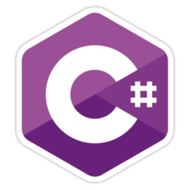
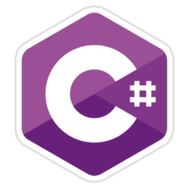
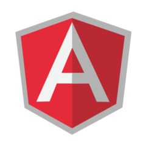
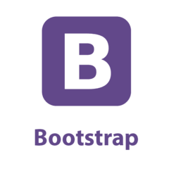
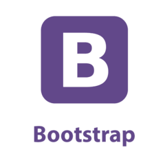
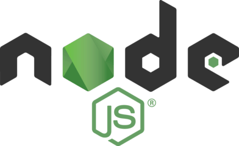
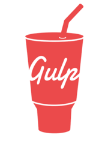
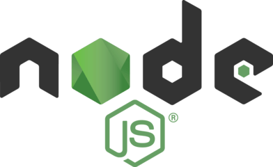
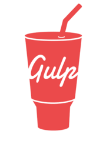

В названиях технологий есть подсказки
public about : Igor = {
Что я умею
skills:[
Языки, которыми я владею
languages:{
Технологии, которые я изучил
technologies:[
Фреймворки, библиотеки
frameworks:[
Другое
others:[
};skills:[
"разработка",
"тестирование",
"управление",
"обучение"
],
Языки, которыми я владею
languages:{
web: [
other: [ "C#"  C# (произносится си шарп) — объектно-ориентированный язык программирования. Разработан в 1998—2001 годах группой инженеров под руководством Андерса Хейлсберга в компании Microsoft как язык разработки приложений для платформы Microsoft .NET Framework. , "Python" Python (МФА: [ˈpʌɪθ(ə)n]; в русском языке распространено название пито́н[7]) — высокоуровневый язык программирования общего назначения, ориентированный на повышение производительности разработчика и читаемости кода. ]
"HTML5"
HTML (от англ. HyperText Markup Language — «язык гипертекстовой разметки») — стандартизированный язык разметки документов во Всемирной паутине. Большинство веб-страниц содержат описание разметки на языке HTML (или XHTML).
,
"CSS3"
CSS (/siːɛsɛs/ англ. Cascading Style Sheets — каскадные таблицы стилей) — формальный язык описания внешнего вида документа, написанного с использованием языка разметки.
,
"Javascript"
JavaScript обычно используется как встраиваемый язык для программного доступа к объектам приложений. Наиболее широкое применение находит в браузерах как язык сценариев для придания интерактивности веб-страницам
,
"CoffeeScript"
CoffeeScript ([’kɔ:fɪ skrɪpt]; кофи скрипт) — язык программирования, транслируемый в JavaScript. CoffeeScript добавляет синтаксический сахар чтобы улучшить читаемость кода и уменьшить его размер.
,
"Typescript"
TypeScript — язык программирования, представленный Microsoft в 2012 году и позиционируемый как средство разработки веб-приложений, расширяющее возможности JavaScript.
,
"PHP"
PHP (рекурсивный акроним словосочетания PHP: Hypertext Preprocessor), сконструирован специально для ведения Web-разработок и его код может внедряться непосредственно в HTML.
],other: [ "C#"  C# (произносится си шарп) — объектно-ориентированный язык программирования. Разработан в 1998—2001 годах группой инженеров под руководством Андерса Хейлсберга в компании Microsoft как язык разработки приложений для платформы Microsoft .NET Framework. , "Python" Python (МФА: [ˈpʌɪθ(ə)n]; в русском языке распространено название пито́н[7]) — высокоуровневый язык программирования общего назначения, ориентированный на повышение производительности разработчика и читаемости кода. ]
},
Технологии, которые я изучил
technologies:[
"HTML5 Canvas"
Canvas (англ. canvas — «холст», рус. канва́с) — элемент HTML5, предназначенный для создания растрового двухмерного изображения при помощи скриптов, обычно на языке JavaScript.
Используется, как правило, для отрисовки графиков для статей и игрового поля в некоторых браузерных играх. Но также может использоваться для встраивания видео в страницу и создания полноценного плеера.
Используется в WebGL для аппаратного ускорения 3D графики
charts.js Google Maps three.js , "SVG" SVG (от англ. Scalable Vector Graphics — масштабируемая векторная графика) — язык разметки масштабируемой векторной графики, созданный Консорциумом Всемирной паутины (W3C) и входящий в подмножество расширяемого языка разметки XML, предназначен для описания двумерной векторной и смешанной векторно/растровой графики в формате XML.
Поддерживает как неподвижную, так и анимированную интерактивную график.
d3.js Интерактивные карты , "WebGL" WebGL (Web-based Graphics Library) — программная библиотека для языка программирования JavaScript, позволяющая создавать на JavaScript интерактивную 3D-графику, функционирующую в широком спектре совместимых с ней веб-браузеров.
За счёт использования низкоуровневых средств поддержки OpenGL, часть кода на WebGL может выполняться непосредственно на видеокартах.
three.js Blend4Web Collada
Используется, как правило, для отрисовки графиков для статей и игрового поля в некоторых браузерных играх. Но также может использоваться для встраивания видео в страницу и создания полноценного плеера.
Используется в WebGL для аппаратного ускорения 3D графики
charts.js Google Maps three.js , "SVG" SVG (от англ. Scalable Vector Graphics — масштабируемая векторная графика) — язык разметки масштабируемой векторной графики, созданный Консорциумом Всемирной паутины (W3C) и входящий в подмножество расширяемого языка разметки XML, предназначен для описания двумерной векторной и смешанной векторно/растровой графики в формате XML.
Поддерживает как неподвижную, так и анимированную интерактивную график.
d3.js Интерактивные карты , "WebGL" WebGL (Web-based Graphics Library) — программная библиотека для языка программирования JavaScript, позволяющая создавать на JavaScript интерактивную 3D-графику, функционирующую в широком спектре совместимых с ней веб-браузеров.
За счёт использования низкоуровневых средств поддержки OpenGL, часть кода на WebGL может выполняться непосредственно на видеокартах.
three.js Blend4Web Collada
],
Фреймворки, библиотеки
frameworks:[
"Angular.js"

AngularJS — JavaScript-фреймворк с открытым исходным кодом. Предназначен для разработки одностраничных приложений.
Его цель — расширение браузерных приложений на основе MVC-шаблона, а также упрощение тестирования и разработки.
Google , "React.js" React.js, в основном называют React - открытая JavaScript библиотека для создания интерфейсов, которая призвана решать проблемы частичного обновления содержимого веб-страницы, с которыми сталкиваются в разработке одностраничных приложений.
Разрабатывается Facebook, Instagram и сообществом индивидуальных разработчиков
Facebook , "Vue.js" Vue (произносится /vjuː/, примерно как view) — это прогрессивный фреймворк для создания пользовательских интерфейсов.
В отличие от фреймворков-монолитов, Vue создан пригодным для постепенного внедрения.
Его ядро в первую очередь решает задачи уровня представления (view), что упрощает интеграцию с другими библиотеками и существующими проектами. , "three.js" Three.js — легковесная кроссбраузерная библиотека JavaScript, используемая для создания и отображения анимированной компьютерной 3D графики при разработке веб-приложений.
Three.js скрипты могут использоваться совместно с элементом HTML5 CANVAS, SVG или WebGL.
Исходный код расположен в репозитории GitHub. , "D3.js" D3.js (или просто D3) это JavaScript-библиотека для обработки и визуализации данных. Она предоставляет удобные утилиты для обработки и загрузки массивов данных и создания DOM-элементов.
Эта заметка описывает работу с основными методами библиотеки, она подойдёт для изучения основ библиотеки и погружения в её логику и возможности. , "jQuery" jQuery — библиотека JavaScript, фокусирующаяся на взаимодействии JavaScript и HTML.
Библиотека jQuery помогает легко получать доступ к любому элементу DOM, обращаться к атрибутам и содержимому элементов DOM, манипулировать ими.
Также библиотека jQuery предоставляет удобный API для работы с AJAX. Сейчас разработка jQuery ведётся командой jQuery во главе с Джоном Резигом. , "Snap.svg" SVG - отличный способ создания интерактивной, независимой от разрешения векторной графики, которая отлично смотрится на любом экране размера.
Snap.svg упрощает работу с SVG, так же, как jQuery упрощает работу с DOM. , "Bootstrap"  Bootstrap (также известен как Twitter Bootstrap) — свободный набор инструментов для создания сайтов и веб-приложений.
Включает в себя HTML- и CSS-шаблоны оформления для типографики, веб-форм, кнопок, меток, блоков навигации и прочих компонентов веб-интерфейса, включая JavaScript-расширения. , "Pixi.js" Pixi.js позволяет использовать мощь WebGL для рендеринга 2D-сцен, совершенно не вникая в подробности реализации, более того, он умеет самостоятельно определять наличие поддержки WebGL и переключаться между способами рендеринга.
В отсутствие WebGL рендеринг осуществляется средствами canvas. Кроме того в Pixi.js реализован граф сцены, поддержка текстур и спрайтов, чуть больше недели назад в нём появилась поддержка интерактивности — на спрайты можно повесить обработчики событий мыши и тачскрина. , "Charts.js" Charts.js - это библиотека, которая умеет отрисовывать интерактивные графики посредством Canvas.
Очень проста в использовании.
Его цель — расширение браузерных приложений на основе MVC-шаблона, а также упрощение тестирования и разработки.
Google , "React.js" React.js, в основном называют React - открытая JavaScript библиотека для создания интерфейсов, которая призвана решать проблемы частичного обновления содержимого веб-страницы, с которыми сталкиваются в разработке одностраничных приложений.
Разрабатывается Facebook, Instagram и сообществом индивидуальных разработчиков
Facebook , "Vue.js" Vue (произносится /vjuː/, примерно как view) — это прогрессивный фреймворк для создания пользовательских интерфейсов.
В отличие от фреймворков-монолитов, Vue создан пригодным для постепенного внедрения.
Его ядро в первую очередь решает задачи уровня представления (view), что упрощает интеграцию с другими библиотеками и существующими проектами. , "three.js" Three.js — легковесная кроссбраузерная библиотека JavaScript, используемая для создания и отображения анимированной компьютерной 3D графики при разработке веб-приложений.
Three.js скрипты могут использоваться совместно с элементом HTML5 CANVAS, SVG или WebGL.
Исходный код расположен в репозитории GitHub. , "D3.js" D3.js (или просто D3) это JavaScript-библиотека для обработки и визуализации данных. Она предоставляет удобные утилиты для обработки и загрузки массивов данных и создания DOM-элементов.
Эта заметка описывает работу с основными методами библиотеки, она подойдёт для изучения основ библиотеки и погружения в её логику и возможности. , "jQuery" jQuery — библиотека JavaScript, фокусирующаяся на взаимодействии JavaScript и HTML.
Библиотека jQuery помогает легко получать доступ к любому элементу DOM, обращаться к атрибутам и содержимому элементов DOM, манипулировать ими.
Также библиотека jQuery предоставляет удобный API для работы с AJAX. Сейчас разработка jQuery ведётся командой jQuery во главе с Джоном Резигом. , "Snap.svg" SVG - отличный способ создания интерактивной, независимой от разрешения векторной графики, которая отлично смотрится на любом экране размера.
Snap.svg упрощает работу с SVG, так же, как jQuery упрощает работу с DOM. , "Bootstrap"  Bootstrap (также известен как Twitter Bootstrap) — свободный набор инструментов для создания сайтов и веб-приложений.
Включает в себя HTML- и CSS-шаблоны оформления для типографики, веб-форм, кнопок, меток, блоков навигации и прочих компонентов веб-интерфейса, включая JavaScript-расширения. , "Pixi.js" Pixi.js позволяет использовать мощь WebGL для рендеринга 2D-сцен, совершенно не вникая в подробности реализации, более того, он умеет самостоятельно определять наличие поддержки WebGL и переключаться между способами рендеринга.
В отсутствие WebGL рендеринг осуществляется средствами canvas. Кроме того в Pixi.js реализован граф сцены, поддержка текстур и спрайтов, чуть больше недели назад в нём появилась поддержка интерактивности — на спрайты можно повесить обработчики событий мыши и тачскрина. , "Charts.js" Charts.js - это библиотека, которая умеет отрисовывать интерактивные графики посредством Canvas.
Очень проста в использовании.
],
Другое
others:[
"Linux"
Linux — семейство Unix-подобных операционных систем на базе ядра Linux, включающих тот или иной набор утилит и программ проекта GNU, и, возможно, другие компоненты.
Как и ядро Linux, системы на его основе как правило создаются и распространяются в соответствии с моделью разработки свободного и открытого программного обеспечения. , "Git" Git — распределённая система управления версиями.
Проект был создан Линусом Торвальдсом для управления разработкой ядра Linux, первая версия выпущена 7 апреля 2005 года.
Ядро Git представляет собой набор утилит командной строки с параметрами. Все настройки хранятся в текстовых файлах конфигурации. Такая реализация делает Git легко портируемым на любую платформу и даёт возможность легко интегрировать Git в другие системы (в частности, создавать графические git-клиенты с любым желаемым интерфейсом). , "Node.js"  Node или Node.js — программная платформа, основанная на движке V8 (транслирующем JavaScript в машинный код), превращающая JavaScript из узкоспециализированного языка в язык общего назначения.
Node.js добавляет возможность JavaScript взаимодействовать с устройствами ввода-вывода через свой API (написанный на C++), подключать другие внешние библиотеки, написанные на разных языках, обеспечивая вызовы к ним из JavaScript-кода. , "Gulp.js"  Gulp.js - это потоковый сборщик проектов на JS. Он использует Stream и является очень быстрым.
Для примера, проект где около тысячи stylus файлов, GruntJS нужно примерно 2.5 секунды на сборку и 2 секунды на обработку autoprefixer'ом. Gulp все это делает за 0.5 секунды выигрывая у GruntJS минимум в 4 раза. , "Webpack" webpack - система сборки, которая предоставляет не только бандлинг (компоновку) модулей, но и может выполнять задачи, которыми занимаются Gulp/Grunt.
Это значит, что нужно тратить время на работу с несколькими инструментами и интеграцией. , "Unity 5" Unity — это инструмент для разработки двух- и трёхмерных приложений и игр, работающий под операционными системами Windows, Linux и OS X.
Созданные с помощью Unity приложения работают под операционными системами Windows, OS X, Playstation 4, XBox, Windows Phone, Android, Apple iOS, Linux, а также на игровых приставках , "Blender" Blender — свободный профессиональный пакет для создания трёхмерной компьютерной графики, включающий в себя средства моделирования, анимации, рендеринга, постобработки и монтажа видео со звуком, компоновки с помощью «узлов» (Node Compositing), а также для создания интерактивных игр. , "Работа с API" API (программный интерфейс приложения, интерфейс прикладного программирования) — набор готовых классов, процедур, функций, структур и констант, предоставляемых приложением (библиотекой, сервисом) или операционной системой для использования во внешних программных продуктах.
Используется программистами при написании всевозможных приложений. , "Chrome Extentions" Расширения Google Chrome позволяют расширить возможности и функции браузера.
Та или иная функция может быть полезна для некоторых людей, но не для всех. Расширения позволяют добавлять в Google Chrome только нужные возможности, избегая накопления функций, которые не используются.
Google создал специальную галерею расширений от третьих лиц.
Как и ядро Linux, системы на его основе как правило создаются и распространяются в соответствии с моделью разработки свободного и открытого программного обеспечения. , "Git" Git — распределённая система управления версиями.
Проект был создан Линусом Торвальдсом для управления разработкой ядра Linux, первая версия выпущена 7 апреля 2005 года.
Ядро Git представляет собой набор утилит командной строки с параметрами. Все настройки хранятся в текстовых файлах конфигурации. Такая реализация делает Git легко портируемым на любую платформу и даёт возможность легко интегрировать Git в другие системы (в частности, создавать графические git-клиенты с любым желаемым интерфейсом). , "Node.js"  Node или Node.js — программная платформа, основанная на движке V8 (транслирующем JavaScript в машинный код), превращающая JavaScript из узкоспециализированного языка в язык общего назначения.
Node.js добавляет возможность JavaScript взаимодействовать с устройствами ввода-вывода через свой API (написанный на C++), подключать другие внешние библиотеки, написанные на разных языках, обеспечивая вызовы к ним из JavaScript-кода. , "Gulp.js"  Gulp.js - это потоковый сборщик проектов на JS. Он использует Stream и является очень быстрым.
Для примера, проект где около тысячи stylus файлов, GruntJS нужно примерно 2.5 секунды на сборку и 2 секунды на обработку autoprefixer'ом. Gulp все это делает за 0.5 секунды выигрывая у GruntJS минимум в 4 раза. , "Webpack" webpack - система сборки, которая предоставляет не только бандлинг (компоновку) модулей, но и может выполнять задачи, которыми занимаются Gulp/Grunt.
Это значит, что нужно тратить время на работу с несколькими инструментами и интеграцией. , "Unity 5" Unity — это инструмент для разработки двух- и трёхмерных приложений и игр, работающий под операционными системами Windows, Linux и OS X.
Созданные с помощью Unity приложения работают под операционными системами Windows, OS X, Playstation 4, XBox, Windows Phone, Android, Apple iOS, Linux, а также на игровых приставках , "Blender" Blender — свободный профессиональный пакет для создания трёхмерной компьютерной графики, включающий в себя средства моделирования, анимации, рендеринга, постобработки и монтажа видео со звуком, компоновки с помощью «узлов» (Node Compositing), а также для создания интерактивных игр. , "Работа с API" API (программный интерфейс приложения, интерфейс прикладного программирования) — набор готовых классов, процедур, функций, структур и констант, предоставляемых приложением (библиотекой, сервисом) или операционной системой для использования во внешних программных продуктах.
Используется программистами при написании всевозможных приложений. , "Chrome Extentions" Расширения Google Chrome позволяют расширить возможности и функции браузера.
Та или иная функция может быть полезна для некоторых людей, но не для всех. Расширения позволяют добавлять в Google Chrome только нужные возможности, избегая накопления функций, которые не используются.
Google создал специальную галерею расширений от третьих лиц.
]
Примеры работ
portfolio() : Work {
return[
]
}
Контакты
interface Personal {
};
Активно использую современные технологии для достижения наилучшего результата и воплощения любых креативных идей.